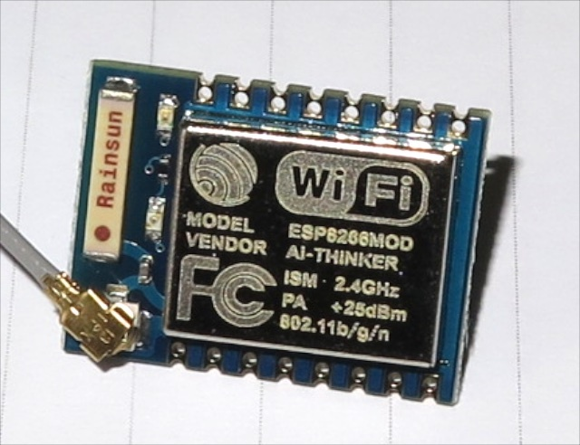
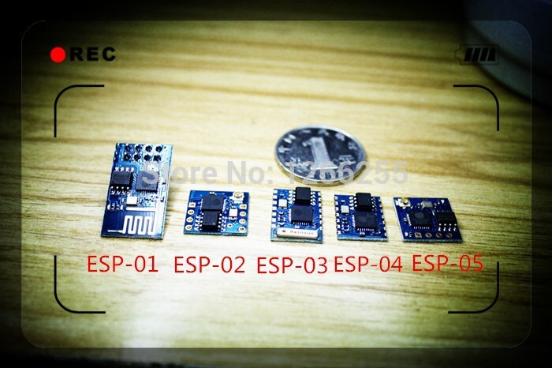

Microservices at Home
Dennis de Greef
Internet of Things
Internet of Things
- Machine to machine protocols (APIs)
- 'Smart' objects
- Everything connected
- Reacting upon eachother
Domotics
- Z-wave
- Zigbee
- Bluetooth
- RF (radio frequency)
- WIFI
- Ethernet
IoT Goal
...to enable it to achieve greater value and service by exchanging data with the manufacturer, operator and/or other connected devices.
manufacturer?
manufacturer
- Philips Hue
- Use app outside WIFI (optional)
- Nest
- Learn habbits from groups
ESP8266
Different models
Even more than this
ESP8266
- Self contained SOC (System on Chip)
- Integrated TCP/IP protocol stack
- 802.11b/g/n support
- SDIO 1.1 / 2.0, SPI, UART
- Currently going for ~4 USD
- Works on 3.3 volts max 200mA
ESP8266
- Default firmware through AT-commands
- ESP-01 model on top of Arduino
- Alternate firmware available
ESP8266
AT-commands
AT+RST // restart the module
AT+CWMODE=? // wifi mode 1= Sta, 2= AP, 3=both
AT+CWLAP // list the AP
AT+CIPSTATUS // get the connection status
AT+CIPSTART=4,"TCP","X1.X2.X3.X4",9999 // TCP server
AT+CIPSEND // send dataNodeMCU
NodeMCU
- Based on Lua 5.1.4
- Currently v0.9.5
- Easy to access wireless router
- Event-Driven programming preferred
- ~400k downloads
Modules
- Filesystem (flash)
- WIFI (client or AP)
- GPIO (Digital IO)
- Network (TCP/UDP)
- I2C (Master/slave comm)
- UART (Serial)
- MQTT (Message queue)
- WS2812B (RGB LEDs)
Example
Working with files
file.open("hello.lua","w+")
file.writeline([[print("hello nodemcu")]])
file.writeline([[print(node.heap())]])
file.close()
node.compile("hello.lua")
dofile("hello.lua")
dofile("hello.lc")
Example
Connecting with WIFI networks
function listap(t)
for ssid,v in pairs(t) do
authmode, rssi, bssid, channel = string.match(v, "(%d),(-?%d+),(%x%x:%x%x:%x%x:%x%x:%x%x:%x%x),(%d+)")
print(ssid,authmode,rssi,bssid,channel)
end
end
wifi.sta.getap(listap)
print(wifi.sta.getip())
--nil
wifi.setmode(wifi.STATION)
wifi.sta.config("SSID","password")
print(wifi.sta.getip())
--192.168.18.110
Example
HTTP client
conn=net.createConnection(net.TCP, false)
conn:on("receive", function(conn, pl) print(pl) end)
conn:connect(80, "121.41.33.127")
conn:send("GET / HTTP/1.1\r\nHost: www.nodemcu.com\r\n"
.."Connection: keep-alive\r\nAccept: */*\r\n\r\n")
Example
MQTT client
m = mqtt.Client("clientid", 120, "user", "password")
m:on("connect", function(con) print ("connected") end)
m:on("offline", function(con) print ("offline") end)
m:on("message", function(conn, topic, data)
print(topic .. ":" )
if data ~= nil then
print(data)
end
end)
m:connect("192.168.11.118", 1880, 0, function(conn) print("connected") end)
m:subscribe("/topic",0, function(conn) print("subscribe success") end)
m:publish("/topic","hello",0,0, function(conn) print("sent") end)
m:close();MQTT?
MQTT
Message Queue Telemetry Transport
MQTT
- Publish/Subscribe (PubSub)
- Lightweight messaging protocol on TCP/IP
- Like instant messaging for software
MQTT

Message broker
- Central server for clients
- Preferably MQTT 3.1.1
- I use Mosquitto
Ideas
- Controlling a WS2812B LED strip
- Reading a temperature and humidity sensor
- Reading out gas and electra readings from Smartmeter
- Controlling the air circulation system inside my house (nRF)
- Controlling 433Mhz equipment like power outlets
Microservices?
Software architecture style
- Understandable within ~15 mins
- Easy to (unit)test
- Easy to replace
- Promotes continuous delivery
- Unix philosophy
- Do one thing, and do it well
Microservices
- Service that acts as an MQTT <-> Hue REST API bridge
- Service that parses syslog for WIFI clients and publishes MQTT
- Service that broadcasts presence from wifi clients
- Service that switches lights off when everybody away
https://github.com/dennisdegreef/mqtt-hue-bridge
Event Sourcing
- Stores events instead of state
- MQTT messages are events
- I store them in MongoDB or ElasticSearch
- Perform data analysis to detect behaviour for example
https://github.com/dennisdegreef/mqtt-mongo-recorder
Docker?
- I currently run the services on a RaspberryPi 2
- Looking into Docker on ARM
- Currently only with ArchLinux?
- No Pi2 architecture in QEMU :(
Questions? I <3 feedback
- GitHub: http://github.com/dennisdegreef
- Twitter: @dennisdegreef
- Blog: http://www.dennisdegreef.net/
- IRC: link0 on Freenode